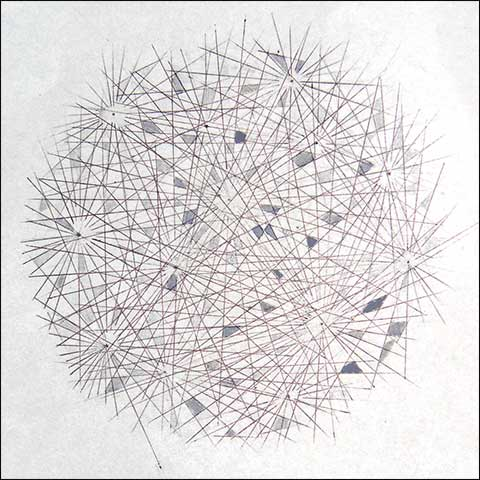
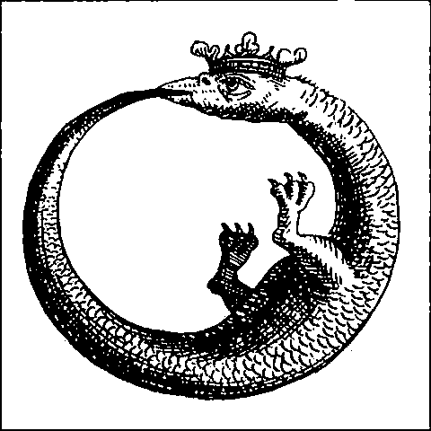
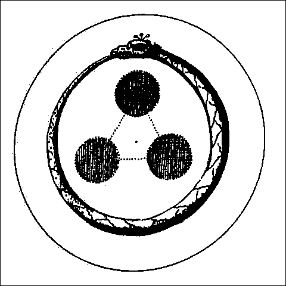
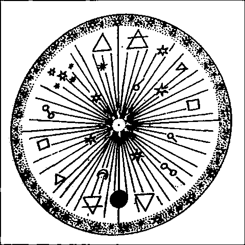
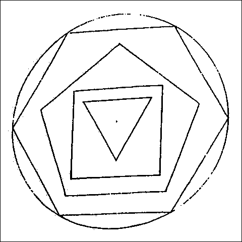
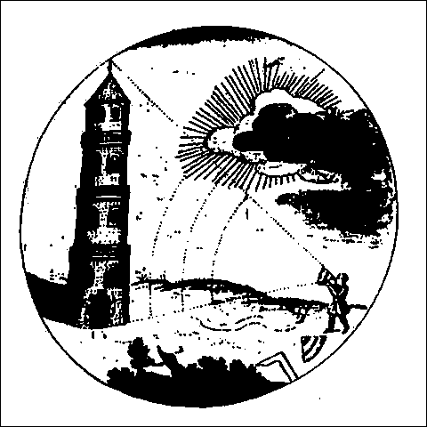
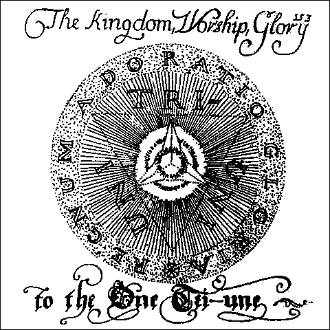
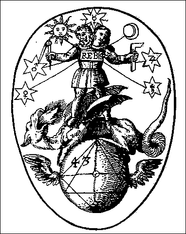
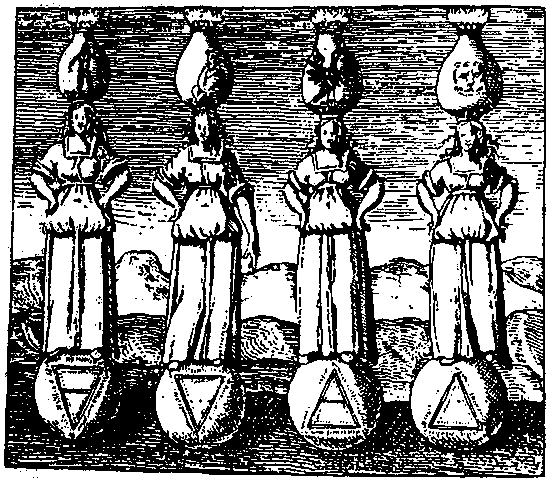
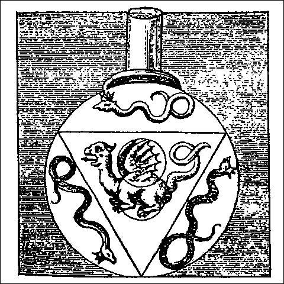

Начнем с попытки самооправдания или, как принято в научном мире, с обоснования актуальности темы… А может быть, не будем оправдываться? Неужели кто-нибудь усомнится в том, что всякий творец (и с большой, и с малой буквы) при создании любой вещи оперирует числами, пользуется счетом, ищет пропорции (т.е. числовые отношения), выстраивает ритмы, приводит части к гармонии?
И разве не наилучших результатов достигает тот создатель вещей (в дальнейшем будем именовать его дизайнер), который проникает в душу вещей, а душа эта — число. Так утверждали философы и мудрецы Древности, так ощущают мир поэты и художники.
Предоставим слово им.
Левкипп: Всё сущее является числами или происходит из чисел.
Пифагор: Числа — души вещей.
Филолай: Всё познаваемое имеет число. Ибо без последнего невозможно ничего ни понять, ни познать.
Платон: …То общее, чем пользуется любое искусство, а также рассудок и знания; то, что каждый человек должен узнать прежде всего — я называю это числом и счетом.
Плотин: Мы нашли, что число — до сущих и до сущего. Число созидает сущее. Числом является сам ум; и если душа зависит от ума и живет его смыслом, то и душа есть число.
Платон: Высшая мудрость — это наука о числе. Всё, что относится к области искусств, каким-то образом причастно измерению.
А теперь по существу.
Мы привыкли начинать счет с единицы. Однако, в самом начале, до сотворения мира, были два числа — ноль и бесконечность. Эти числа материализовались в древнем хаосе, изображаемом в античных мифах.Все остальные числа существовали в потенции в виде идей (эйдосов), «литейных форм» или матриц, с которых по мере сотворения космоса были отлиты (отпечатаны) все вещи.
Яркую картину Хаоса изобразил Овидий (если ярким может быть сплошной мрак):
- Не было моря, земли и над всем распростертого неба,
- Лик был природы един на всей широте мирозданья, —
- Хаосом звали его. Нечлененной и грубой громадой,
- Бременем косным он был,- и только,- где собраны были
- Связанных слабо вещей семена разносущные вкупе.
- …Воздух был света лишен, и форм ничто не хранило…
- Лик был природы един на всей широте мирозданья, —

Хаотическое состояние эфира заполненнго световыми волнами.
В этой картине стали явными два числа — ноль (отсутствие света, форм, порядка) и бесконечность (хаос простирается на всю вселенную, всё мировое пространство). Цвет хаоса, таким образом, черный, а число черного — и ноль, и бесконечность. Поскольку оба эти числа относятся к одной сущности, то они тождественны, т.е. равны.
Получаем первую парадоксальную формулу: 0 = ∞ (бесконечности).
Однажды наступил момент, когда Творец почувствовал трансцендентное желание прервать своё бездействие и сотворить мир. Для этого потребовалось немногое: оплодотворить косный материал хаоса творящим Словом. И вот по слову Его возникли небо и земля, вода и суша, верхняя и нижняя твердь.
Теперь требовалось увидеть результат этой деятельности, и Демиург сказал: — Да будет свет. И стал свет. И увидел Бог свет, что он хорош; И отделил Бог свет от тьмы. И назвал Бог свет днем, а тьму ночью. И был вечер, и было утро: день один.(Бытие 1: 3-5)
Свет был настолько хорош, что боги всех народов присвоили себе его сияние: Амон-Ра, Атон, Ахура-Мазда, Савитар, Агни, Ушас, Брахман, Пуруша, Рудра, Зевс, Ирида…и, наконец, Спаситель, Иисус Христос. — Я свет миру, — возгласил Сын.
Откуда появился свет? Как и всё остальное — из мрака.
— Вышла из мрака младая с перстами пурпурными Эос… (Гомер)
Античные космогонические мифы придают этому процессу наглядное оформление:
- — Из Хаоса родились Эреб (Мрак) и черная ночь.
- А от Ночи произошли Эфир и Денница,
- Которых она родила, зачав от Эреба
- В любовном совокуплении. (Гесиод)
- А от Ночи произошли Эфир и Денница,

Согласно гомеровскому и орфическому мифам творения, великая богиня-мать Никта-Эвринома (Ночь) зачала дитя от северного ветра (Борея) и, превратившись в морскую голубку, снесла во чрево Эреба Мировое серебряное яйцо. Из него и появился Эрот Протогон, которому Орфей посвятил один из своих прекрасных гимнов:
- — О Протогон, двуприродный, великий, парящий в эфире,
- Ты из яйца золотого родился, Эрот златокрылый.
- …Вечный скиталец, что взмахами крыльев низводит на землю
- Свет осиянный, за что и зовется пречистым Фанетом.
- Ты из яйца золотого родился, Эрот златокрылый.
Итак, родился Свет. Он был эманацией божества, он появился до Солнца — так гласят и античные мифы, и Священное писание.
Этот первозданный свет отождествляется с Демиургом, которого платоники и неоплатоники называют Ум. И ему, и свету настойчиво и безоговорочно приписывается число один, монада. Одно из имен Бога — Единое, а цвет его — конечно, белый.
Нашим зрением, «плотским оком» мы ясно отличаем белое от черного, свет от мрака. Но такая ди картина предстает перед мысленным взором в мире идей, понятий, эйдосов, архетипов? Оказывается, это светоносное Единое тожднственно космическому первозданному мраку.
Иными словами (вернее, числами), оказывается, что 1=0 или, если угодно, 1=∞, так как 0 = ∞, что доказано выше.
Неоплатоник Синезий обращается к Уму (богу):
- Чисел всех число
- Всех единств — одно
- Ты одно и всё.
- Ты одно во всем.
- Всех единств — одно
В самом деле, разве стихия света не так же едина, как стихия тьмы?
И не так же хаотична? В пространстве, наполненном светом, нет форм, нет упорядоченной структуры, нет доминирующих или второстепенных направлений. Там хаотически смешаны шаровидные волны энергии от множества источников — первичных и вторичных, небесных и земных. И разве всегда сияет свет для зрячего ока? Бог творит и свет, и тьму, по Его собственным словам. В этом нет ничего удивительного, — ведь всё сущее имеет свое инобытие, свою антитезу. Тьма (0) — инобытие света (1), и оба они равноценны, иначе Бог не уравнял бы их в правах:
День дню передает речь, и ночь ночи открывает знание. (Пс. 18)
К тому же, сам Бог являлся людям из мрака, как свет из тьмы, как белое из черного.
— Наклонил Он небеса и сошел, и мрак под ногами Его… (Пс. 103)
А если Он является людям, то сияет столь ослепительным светом, что человек теряет зрение.«Бог есть сверхсветлый мрак», — свидетельствует Дионисий Ареопагит. «Божественный мрак — это тот недосягаемый свет, в котором, как сказано в Писании, обитает Бог. Свет этот незрим по причине чрезмерной ясности и недосягаем по причине преизбытка сверхсущностного светолития». (Антология мировой философии, т. 1, ч. 2)
Так Единое и светлое превращается в темное и сверхчувственное, 1 = 0 = ∞.

«У этого было Начало, но не будет Конца».
Такая же метаморфоза происходит на антропологическом уровне, в духовном мире человека. О слепом человеке говорят «темный». Для зрячего существа утрата «света очей» — тяжелая кара судьбы. Но этот внутренний мрак способен обернуться ярким светом провидения, пророческим даром. Афина Паллада ослепила Тиресия в наказание за дерзость — он осмелился созерцать богиню в состоянии ню. Однако другие, более справедливые олимпийцы наградили Тиресия в виде компенсации даром видеть то, что зрячие люди и при ярком свете не видели.
Во всех мифах и сказаниях слепые пророки особенно проницательны — примеров тому слишком много. Тьма очей пробуждает яркий свет разума, трансцендентальный свет сверхсознания. Мистическое прозрение нисходит во тьму незрячих глаз. Выразим эту диалектическую закономерность ещё раз математической формулой: 0 = 1, черное тождественно белому.
Если угодно, приведем еще один аргумент для вящей доказательности этих парадоксальных формул. Индийская философия Упанишад утверждает, что истинное знание — это знание Бога Атмана, и это знание может снизойти в душу, полностью свободную от зрительных и всяких других образов — туда, где царит шунья — полная пустота, ноль ощущений. Это «четвертая пада атмана» — самый верный способ познания божества.
Так пустота заполняется бесконечной полнотой божественного Логоса, Смысла, Света; ноль становится тождествен бесконечности.
При рассмотрении наших нумерологически-колористических проблем было бы несправедливо обойти вниманием современную науку, тем более, что она всё более и более убеждается в правоте древних мифов и античной философии относительно законов бытия. В частности, мысль о полном тождестве света и мрака — это физическая истина. Свет делает видимыми все вещи, но сам он невидим. Ни в какой сверхмощный микроскоп мы в принципе не можем увидеть частицы света (фотоны), потому что мы видим только то, что освещено, а чем же можно осветить глубокий мрак микромира? Вот опять парадокс: 1 = 0, свет и тьма тождественны, белое равно черному.

«Единый неизменен. Все вещи переменчивы».
Теперь наступило время честно признаться: в наших двучленных формулах незримо присутствовал третий член, без которого эти формулы были бы чистой бессмыслицей. Это — зрячий человек, или попросту зрение. Без этого фактора мы не могли бы поименовать ноль тьмой (или черным цветом), а свет единицей (белым). Там, где нет зрения — нет и цвета; все оптические качества становятся тождественны, или попросту исчезают. Человек и его ощущения служат связующим звеном между противоположными числовыми и цветовыми знаками.
Здесь уместно несколько развить мысль, бегло обозначенную в начале этого текста. Выше было сказано, что в античных философских сочинениях категория числа понимается как идея, как нечто мыслимое, «умное», эйдетическое, сущностное, потенциально-энергийное. Такое число противопоставляется вещно-определенному, составленному из единиц счета. В области цвета следует также различать мыслимые, ноуменальные, умозрительные или эйдетические, т.е., кратко говоря, «идеальные» и, с другой стороны, «материальные», чувственные, не претендующие на статус основных. Так, например, слово «красный» вызывает в нашем представлении некий архетип, или парадигму красного, сравнимого с огнем, кровью, цветком мака. Если же мы видим красный предмет, то он далеко не всегда соответствует архетипу. Мы воспринимаем конкретный вид красного: кирпичный, морковный, томатный, алый, клюквенный, вишневый, малиновый и т.д.
До сих пор, как и в дальнейших наших рассуждениях, говоря о цвете, мы имели и будем иметь в виду именно эти цветовые «ноумены», идеи; им соответствуют идеальные числа-эйдосы, по терминологии античных философов.
Теперь займемся хроматическими цветами и их нумерологией. Здесь нас также ожидают парадоксальные формулы. Неоплатоник Прокл в своем труде «Первоосновы теологии» (V век) утверждает, что все элементы множества единичны, и, стало быть, тождественны. — «Всякое множество состоит или из объединенностей, или из единиц».(А.М.Ф., т. 1, кн. 1)
В самом деле: белый — это объединенность всех хроматических (чистых) цветов. Мы соотносим его с единицей, но так же единичны каждый из семи составляющих спектр цветов; они пространственно разделены и обособлены друг от друга, каждый имеет свое название, поскольку физические характеристики этих цветов и их действия на зрение человека различны.
В диалоге Платона «Филеб» мы читаем, что «…цвет…как нельзя более подобен (другому) цвету, и именно потому, что всякий цвет есть цвет, и один цвет нисколько не будет отличаться от другого;» — на уровне идеи, понятия, — добавим мы. Если же взглянуть на феномен телесным оком, то, продолжает Платон (устами Сократа), — «черный цвет не только отличен от белого, но и прямо ему противоположен», — что, опять-таки, совершенно справедливо (Платон, т. 3, ч. 1)
Суть этого сократического диалога выражается в терминах арифметики так:
1 = 1 +1+1+1+1+1+1

«Двоичность справедливого знака».
Исходя из сказанного, ясно, что все наши парадоксальные формулы не являются в полном смысле математическими, а скорее нумерологическими, поскольку символы, содержащиеся в них — этоне арифметические знаки, а смысловые единицы, образы, или эйдосы (по Платоновской терминологии). Ими нельзя оперировать как числами, их нельзя складывать, перемножать и пр. В самом деле: если Бог — неизреченное число, Единое, Свет миру — можно ли Бога на что-то умножать или делить? Можно ли от идеи Света что-либо отнять? Монада, диада, триада и прочие «объединенности» подобны изваяниям из камня, они вечны, неразрушимы и вездесущи.
Л.Леви-Брюль, исследователь культуры аборигенных народов Северной Америки, обнаружил, что отношение их к числам весьма сходно с доктринами Пифагора и его школы.В сознании аборигенов «каждое число имеет свою собственную индивидуальную физиономию, своего рода мистическую атмосферу… каждое число…чувствуется по-особому, не так, как другие. Мистическая обособленность каждого из чисел приводит к тому, что они не складываются, не умножаются , не вычитаются и не делятся. (Числа являются) скорее мистическими реальностями, чем арифметическими единицами» (Л. Леви-Брюль. Первобытное мышление).
Согласно теории пифагорейцев, числа — души вещей, рукотворных и нерукотворных, тварных и нетварных, а стало быть, и души всех красок и цветов. Выше было сказано, что каждый цвет единичен, обособлен от других. Однако существовать в одиночестве он не может. У всякого цвета есть пара, и вместе они образуют диаду, символизируемую числом.
Можно попытаться проследить историю возникновения цветового космоса, подобно тому, как в мифах изложена история сотворения мира. Белый цвет, т.е. свет, был, конечно, прародителем цвета. Он породил первую пару хроматических цветов, и для этого ему не потребовался брачный союз с кем-либо или чем-либо. Достаточно было только встретиться с первозданной стихией — небом, которое разделило световой поток на два хроматических цвета — желтый и синий. Это первая диада, начало хроматизма.
Но ведь было уже «предначало этого начала» — была диада белого и черного — Неба и Земли, а также диада состояний мира — хаоса и космоса. Идя далее, мы видим, что всякая вещь и всякое понятие имеют свою противоположность. Похоже, что закон симметрии — основной закон бытия (и не только я так думаю). Естественно, что и цвета подчиняются ему. Для того, чтобы увидеть пару взаимно-дополнительных цветов, достаточно провести диаметр в 10-ступенном цветовом круге: концы диаметра укажут на симметричную пару цветов. (см. раздел «Цветовые системы» в главе «Теория» на нашем сайте). Симметричные пары образуют также контрастные цвета («Цветовые системы»).

«Три не существуют отдельно от Единого, и Единый неотделим от Трех».
Поскольку человек весь состоит из противоположностей, зрение его также нуждается в контрастах; монаде наш глаз предпочитает диаду. В физическом плане все симметричные системы необходимы и разумны (если природа нуждается в категории разума), стало быть, диадичность не подлежит нашему суду и оценке как принцип. Однако наблюдается интересный факт: в нумерологии число два, а также четные числа первой десятки традиционно полагаются негативными: это начала зла, беспорядка, разрушения (хотя есть и другие значения, о которых будет сказано в своё время). Пифагор считает диаду «неопределенной», но универсальные начала мира он представляеткак 10 пар противоположностей: предел и беспредельное, нечет и чёт, единое и множество и т.д. Не странно ли это? Пифагор, устроительпорядка и определенности во всех делах человеческих — в музыке, математике, педагогике, религии — конструирует систему универсальных категорий бытия при помощи неопределенных диад. Как видно, даже его гений не сумел преодолеть прочности этого числового архетипа.
Первобытные и примитивные культуры, а также мифы народов мира оставили нам свидетельства негативного отношения ко всему двойному, двойственному, внутренне противоречивому. В ритуальных статуэтках, символических знаках и петроглифах ясно просматривается стремление заменить диаду монадой или триадой.Противоположности объединяются в едином и неразложимом образе: «мезинские птички», «тразименская находка» — это пластические каламбуры, соединяющие женские и мужские признаки. Сращивание человека и животного (кентавры, русалки, гарпии), двуполые божества (Эрот, Кришна, Индра…), трансвестиция полов (Шикхандин из Махабхараты, персонажи мифов маори…) — всё это можно понимать как протест против деления человечества на два пола, а также против отделения животного мира от человеческого. Многие аборигенные народы Африки, Австралии, Новой Гвинеи считают двуполость признаком божественности, так как божество вмещает в себя всё сущее, оно тотально. Поэтому при инициации неофитов один из ритуалов производится с целью придать посвящаемым признаки другого пола, и тем самым усовершенствовать их, приблизить к божественному идеалу (М. Элиаде. Тайные общества. Обряды инициации и посвящения).
Книга Бытия содержит немало примеров гибельности всякого раздвоения, разделения, двоичности. Человеческие драмы начались после того, как у Адама появился антипод в лице Евы; сама смерть пришла на землю впервые в результате вражды между двумя братьями — Каином и Авелем. Да и первый конфликт Бога с человеком произошел от разделения съедобных плодов на дозволенные и недозволенные.

«Царствие, Хвала и Слава Единому Триединому».
В мире цвета диада не производит столь разрушительного действия. Разделение белого на ряд цветовых пар было благоприятно и для зрения, и для души человека. Монохромия в больших количествах утомительна. А цветовая пара дает возможность глазу летать, подобно бабочке, от одного цветка к другому, получая от этого танца и радость, и пользу. Если же нет в поле зрения дополнительных цветов, то всегда найдутся более или менее контрастные пары по яркости или насыщенности. Без контрастов, то есть без цветовой диады, невозможно зрительное восприятие ни формы, ни пространства; может некоторое время оставаться только чистое ощущение цветового тона. Да и то вскоре оно исчезает. Свет становится тождествен темноте; 1 = 0.
Так мы приходим от разделения к объединению в акте отрицания противоположностей (получается в точности по Гегелю, не правда ли? Тезис — антитезис — отрицание отрицания).
Множественность хроматических цветов с неисчислимым количеством их парных сопоставлений выражается числом (бесконечность), но основных пар, или архетипов цветовых диад -четыре: три хроматических и одна ахроматическая.
Внимательный читатель может заметить: выше уже сказано, что все числа тождественны, а стало быть, члены любой диады не только противоположны, но и равны. В физическом плане это научный факт, поскольку один член цветовой пары в нашем органе зрения не может существовать сколько-нибудь долго. Он немедленно порождает второй член — контрастный цвет.
Философия чань-буддизма не разделяет антиномий. Неустойчивость диады преодолевается объединением крайностей. Третий чаньский патриарх Сэн-цан (V век) утвеждает неразличимость субъекта и объекта:
- Знай, что относительность этих двух
- Пребывает в абсолютно единой пустоте,
- В единой пустоте этих двух не расчленить,
- Нельзя сказать та и эта.
- Если сердцем постиг истину,
- Десять тысяч вещей едины по своей природе.
- Одно во всем и всё в одном.
- Пребывает в абсолютно единой пустоте,
Великий Платон преодолевает неустойчивость диады другим способом — он примиряет противоположности путем введения третьего члена, связующего два первых. В диалоге Тимей он излагает теорию пропорции — трехчленной структуры:
«Хорошо связать только два предмета без третьего невозможно; потому что в средине между обоими должна быть соединяющая их связь».

Алхимические символы диады (Ребис), триады Начал, четверицы основных элементов (стихий).
ЧИСЛОВАЯ ТРИАДА — поистине вездесущая конструкция.
В любом процессе существуют три стадии: начало, середина и конец. Диада положительного и отрицательного в волновом движении превращается в триаду, если учесть промежуточное состояние нейтральности. Противоположность тьмы и света примиряется их смешением — цветом (если сомневаетесь — почитайте Платона, Гете, Шеллинга…).
Триада — священное число в культуре всех народов (кроме разве что самых первобытных и диких, умеющих считать только до двух). У Платона числом 3 исчисляются состояния души человека, сословия в государстве, человеческие удовольствмя; и даже самое число — это тройственная структура — единство предела и беспредельного, замыкаемое третьим членом — числом (иными словами, все числа находятся между 0 и оо (нулем и бесконечностью). Получается, что диады как бы и не существует: при ближайшем рассмотрении она оказывается Единым или Троицей (триадой).

«Треугольные символы четырех стихий».
В этой мистической игре числовых Эйдосов можно усмотреть разгадку тайны троичности древних богов — начиная с Эрота и его матери Никты (Эвриномы). В телесной ипостаси их было двое, но в численном выражении трое, т.к. Эрот, сожительствуя с матерью, был сам в себе и сын, и отец.
Первые древние боги существовали в трех ипостасях: подземной, наземной и небесной, соответствующих трем временам года — зиме, весне и осени. К каждому из этих сезонов они меняли цвет: черный — белый — красный. Эта цветовая триада названа первичной, т.к. мы встречаем ее в культуре и искусстве всех времен и народов, от палеолита до нашего времени (см. В. Тэрнер. Символ и ритуал. М. 1983) Идея троичности прочно и навеки воздвигнута на небесах, подобно идеям Монады и Диады.
Трехцветные системы хорошо известны художникам и всем, кто работает с цветом. Одна из них — красный, зеленый и синий — названа триадой основных цветов, т.к. из них путем слагательного смешения образуются желтый, голубой и фиолетовый, а также все промежуточные оттенки. Для получения различных цветов путем вычитательного смешения используется триада основных красок — красная, желтая и синяя. Зрительные ощущения человека складываются из трех цветовых сигналов, производимых нашим аппаратом цветового зрения по всем правилам слагательного смешения (см. раздел сайта «Теория»).
Так подтверждается гениальная гипотеза Аристотеля: Быть видящим значит быть каким-то образом причастным цвету.
Впрочем, это можно считать следствием более общей глобальной теоремы — «всё во всём», повторенной много раз в греческих, индийских, египетских текстах.
Добавим напоследок, что всякий отдельно взятый цвет можно измерить, и число его измерений — три (необходимых и достаточных); так же измеряется в декартовых координатах всякая вещь макромира и самое пространство, в котором мы обитаем.

Три змеи и треугольник – символ Трех начал. Сера, ртуть и Меркурий (ртуть).
В заключение этой первой статьи опять предоставим слово Платону: «…Всё, что причастно чему-нибудь дурному, лишено какого бы то ни было числа. Именно так должен мыслить об этом тот, кто собирается блаженно окончить свои дни. Точно так же никто, не познав числа, никогда не сможет обрести истинного мнения о справедливом, прекрасном, благом и других подобных вещах»…
Впервые статья была опубликована в журнале «Proдизайн», №8